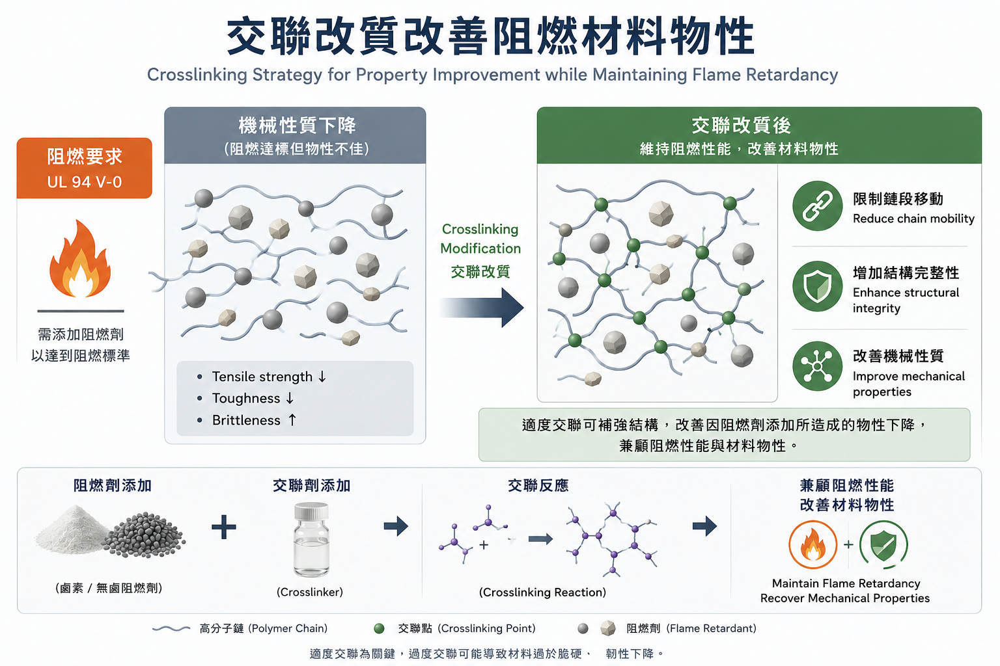

阻燃達標但物性不佳？交聯改質改善塑膠高分子材料物性

🔹提高阻燃劑添加量雖能達標，卻可能導致拉伸強度下降與材料脆化。
🔹同一套阻燃配方在不同高分子基材中，阻燃效果與物性表現皆有差異。
🔹加入適量交聯劑，補償受損的機械性能。
塑膠高分子為了符合法規要求，通常需要通過特定的阻燃標準，例如 UL 94 V-0 等級。無論採用鹵素或無鹵阻燃劑，為了達到目標阻燃等級，往往都必須添加一定比例的阻燃劑。然而，阻燃劑添加量上升雖然有助於通過阻燃測試，卻也可能影響塑膠高分子的物理性質，使材料無法符合產品規格要求。例如拉伸強度下降、材料脆化等。
不同塑膠高分子材料對阻燃劑的相容性程度並不相同，即使採用相同的阻燃劑配方，在不同高分子材料中的阻燃效果與物性表現也可能存在差異。例如，同一套阻燃配方可能在 A 塑膠高分子材料中同時滿足阻燃與物性要求，但在 B 塑膠高分子材料中卻僅能達到阻燃標準，而無法符合物理性質規範。因此，阻燃配方通常無法直接套用於所有塑膠高分子材料，而必須依據不同塑膠高分子進行調整與最佳化，以兼顧阻燃性能與材料物性。
面對 B 塑膠高分子材料這種「阻燃達標、物性犧牲」的瓶頸，除了調整阻燃劑種類與配方比例之外，適度導入交聯技術，可作為改善因阻燃劑添加所造成物性下降的策略之一 [1,2]。
這項改善技術的核心原理，源自於交聯高分子的結構特性。透過微觀交聯結構的建立，可有效限制分子鏈的相對滑移，進而提升材料的機械強度。其改善效果通常與交聯密度（即單位體積內的有效交聯點數量）密切相關，但若交聯密度過高，反而可能導致材料過於脆硬、韌性下降。
交聯高分子（Cross-linked Polymers）
依交聯發生的時機，交聯高分子（Cross-linked Polymers）的形成可概略分為兩種策略：
原位交聯 (In-situ Crosslinking)
在聚合反應進行的同時，利用多官能基單體作為分支節點，直接以「一鍋法」形成交聯高分子。
後交聯改質 (Post-crosslinking)
採分階段製程。第一階段先把線型高分子做好；第二階段再加入特定交聯劑，交聯起來成為交聯高分子。
在阻燃材料的應用中，阻燃劑通常以添加型方式混配於既有高分子基材，因此若需進一步導入交聯技術改善物性，屬於後交聯改質（Post-crosslinking）策略。當高分子基材因添加大量阻燃劑而導致機械強度下降時，可透過策略二適度導入交聯技術補強材料結構，在不改變基材原有製程的前提下，改善因阻燃劑添加所造成的機械性質下降問題。
Reference
- [1] H. Zhao, et al. An interpenetrating polymer networks structure formed by in situ crosslinking of flame retardant for improvement in mechanical properties and flame retardancy of epoxy resins. J. Appl. Polym. Sci. 2023. https://doi.org/10.1002/app.54216
- [2] Y. Chen, et al. Mechanically robust and flame-retardant polylactide composites based on in situ formation of crosslinked network structure by DCP and TAIC. Polymers 2022. https://doi.org/10.3390/polym14020308